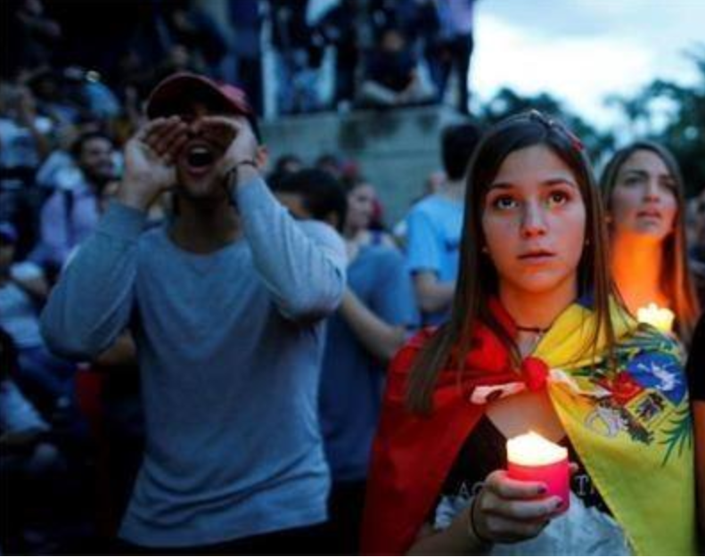
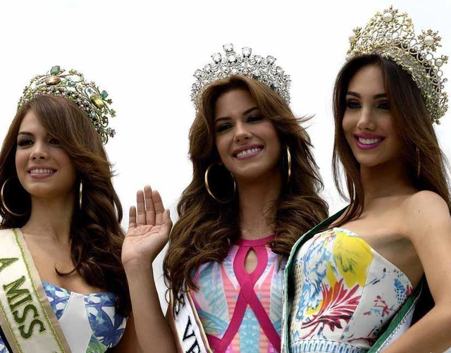
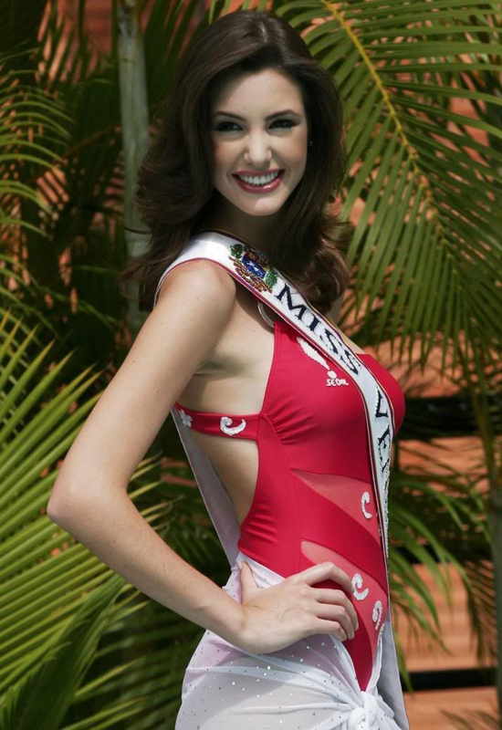
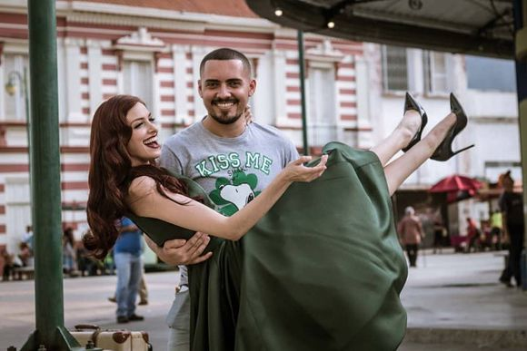

Venezuelan
Venezuelan, the general name of the Venezuelan residents of South America,
is a long-term combination of Indians, whites and blacks. There are 14.71
million people (1982), and the urban population accounts for about 80%. The
population growth rate ranks among the top in Latin America, reaching 3.5%.
In Spanish, the business sector also uses English. Indians speak 170 languages
and dialects (Caribbean, Arawak, and Chibcha in Indian languages)
Miss Venezuela
Venezuela is a magical country that has been known for its innate wealth, such as oil 
and Miss World. Venezuela has a population of only one-thousandth of the world's population,
but none of the countries with the largest number of Miss world.Venezuela is a South
American country and close to the Caribbean Sea. Therefore, it is more complicated in blood
and concentrates on the bloodlines of Indians in Europe and South and North America.
Clarissa Ferrer miss tourism 2018 below
